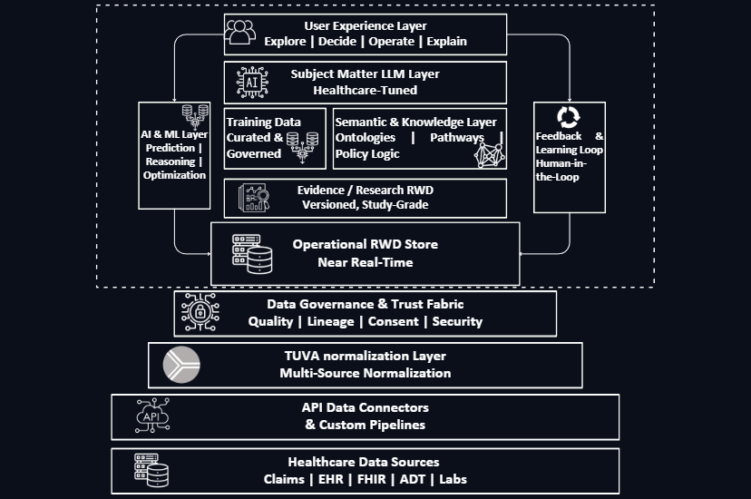

Healthcare Intelligence, Built for the Real World
Transform fragmented healthcare data into trusted, explainable intelligence. Symetrique is a Healthcare Intelligence Operating System that turns real-world data into real-world impact.

Transform fragmented healthcare data into trusted, explainable intelligence. Symetrique is a Healthcare Intelligence Operating System that turns real-world data into real-world impact.
From raw data to real decisions—end to end.

From raw data to real decisions—end to end.
Healthcare has more data than ever—yet less clarity. Patient journeys are fragmented across claims, EHRs, labs, hubs, and operational systems. Teams operate in silos. Dashboards multiply. AI pilots look impressive, but outcomes rarely change. And when a system produces an answer, leaders hesitate to trust it.
The problem isn’t a lack of data. It’s a lack of coherence.
Symetrique unifies data, embeds trust, and delivers intelligence that healthcare can rely on. We ingest and normalize healthcare data at scale, apply governance by design, and teach AI how healthcare actually works—the result is a living intelligence fabric that is explainable, defensible, and continuously improving.
Access to extensive, curated healthcare datasets across the care continuum
Schedule a personalized demo to explore how Symetrique can transform your evidence strategy and accelerate market access.